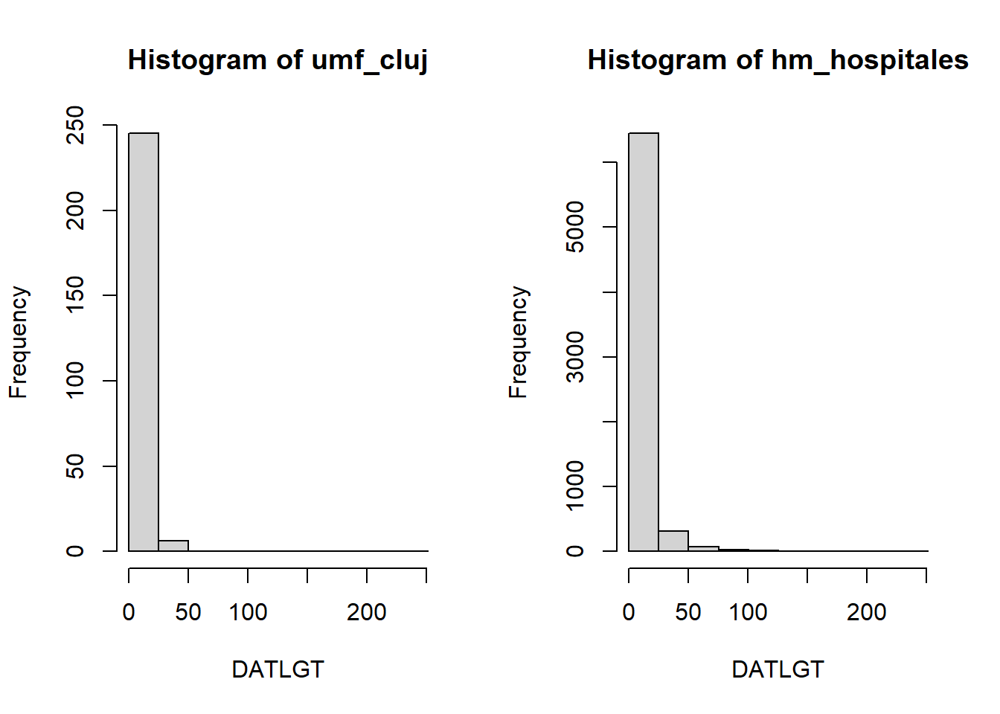

Part 5: Statistical models
Now that we have covered the basics, we can begin to analyze the data in more depth. In this section we will go over some of the statistical models we can fit by using DataSHIELD. On this section we will only be using the Cluj study center.
Logistical regression
We will perform some logistic regressions to see the association of different variables to the survival condition (DSXOS variable). To achieve this, we will have to apply some of the concepts we have already seen in order to prepare our data.
Preparing the data
For the logistic regression, the variables we will use are the following:
DSXOS: Character variable. Outcome status encoded asDeceased,RecoveredandTransferred. To perform a logistic regression this variable will have to be re-encoded as1/0(case/control); the case beingDeceasedand the controls beingRecoveredandTransferred.CMXCOM: Factor variable. Number of comorbidities, encoded as0,1,2and3+.CMXCLD: Character variable. Chronic liver disease, encoded asYesandNo.RFXONC: Character variable. Oncology, encoded asYesandNo.
We only have to do some data wrangling for the DSXOS variable, first we do the re-coding.
ds.recodeValues(var.name = "data$DSXOS",
values2replace.vector = c("Deceased", "Recovered", "Transferred"),
new.values.vector = c(1, 0, 0),
newobj = "DSXOS_recoded")Error: There are some DataSHIELD errors, list them with datashield.errors()datashield.errors()$umf_cluj
[1] "Command 'recodeValuesDS(\"data$DSXOS\", \"Deceased,Recovered,Transferred\", \n \"1,0,0\", NULL)' failed on 'umf_cluj': Error while evaluating 'is.null(base::assign('DSXOS_recoded', value={dsBase::recodeValuesDS(\"data$DSXOS\", \"Deceased,Recovered,Transferred\", \"1,0,0\", NULL)}))' -> Error : Error: values2replace.text argument too long (see nfilter.stringShort)\n"We can see that the DataSHIELD filter is complaining that the length of the values2replace.vector is too large. To overcome this issue, we can perform separate function calls for each of the levels.
ds.recodeValues(var.name = "data$DSXOS",
values2replace.vector = "Deceased",
new.values.vector = 1,
newobj = "DSXOS_recoded")$is.object.created
[1] "A data object <DSXOS_recoded> has been created in all specified data sources"
$validity.check
[1] "<DSXOS_recoded> appears valid in all sources"ds.recodeValues(var.name = "DSXOS_recoded",
values2replace.vector = "Recovered",
new.values.vector = 0,
newobj = "DSXOS_recoded")$is.object.created
[1] "A data object <DSXOS_recoded> has been created in all specified data sources"
$validity.check
[1] "<DSXOS_recoded> appears valid in all sources"ds.recodeValues(var.name = "DSXOS_recoded",
values2replace.vector = "Transferred",
new.values.vector = 0,
newobj = "DSXOS_recoded")$is.object.created
[1] "A data object <DSXOS_recoded> has been created in all specified data sources"
$validity.check
[1] "<DSXOS_recoded> appears valid in all sources"By doing that we successfully created the object DSXOS_recoded, now we just have to convert it to numerical.
# ds.table does not work, I am not sure why
ds.table1D("DSXOS_recoded")Warning: 'ds.table1D' is deprecated.
Use 'ds.table' instead.
See help("Deprecated")$counts
DSXOS_recoded
'' 746
0 220
1 33
Total 999
$percentages
DSXOS_recoded
'' 74.67
0 22.02
1 3.30
Total 100.00
$validity
[1] "All tables are valid!"ds.asNumeric(x.name = "DSXOS_recoded", newobj = "DSXOS_recoded_num")$is.object.created
[1] "A data object <DSXOS_recoded_num> has been created in all specified data sources"
$validity.check
[1] "<DSXOS_recoded_num> appears valid in all sources"Finally, we add it to our data.frame with the other covariates, and we are ready to perform the logistic regression.
DSI::datashield.assign.expr(connections, "data", "cbind(data, DSXOS_recoded_num)")Fitting the models
Pooled analysis
Now we can fit the models. First, we will calculate the association of the outcome status to the covariables chronic liver disease and oncology.
ds.glm(formula = "DSXOS_recoded_num ~ CMXCLD + RFXONC",
data = "data",
family = "binomial")$coefficients Estimate Std. Error z-value p-value low0.95CI.LP
(Intercept) -2.0743671 0.2180219 -9.5144888 1.826085e-21 -2.5016822
CMXCLDYes 0.4811639 0.5395664 0.8917604 3.725214e-01 -0.5763668
RFXONCYes 1.3471273 0.5861413 2.2982979 2.154484e-02 0.1983115
high0.95CI.LP P_OR low0.95CI.P_OR high0.95CI.P_OR
(Intercept) -1.647052 0.1116133 0.07574034 0.1615078
CMXCLDYes 1.538695 1.6179565 0.56193629 4.6585055
RFXONCYes 2.495943 3.8463603 1.21934216 12.1331717And we also calculate the association of the outcome status to the number of comorbidities.
ds.glm(formula = "DSXOS_recoded_num ~ CMXCOM",
data = "data",
family = "binomial")$coefficients Estimate Std. Error z-value p-value low0.95CI.LP
(Intercept) -2.4680995 0.4657780 -5.2988752 1.165182e-07 -3.3810077
CMXCOM1 0.3731538 0.5977740 0.6242389 5.324707e-01 -0.7984617
CMXCOM2 0.5709795 0.5871345 0.9724851 3.308093e-01 -0.5797829
CMXCOM3+ 1.2824759 0.5793410 2.2136804 2.685077e-02 0.1469883
high0.95CI.LP P_OR low0.95CI.P_OR high0.95CI.P_OR
(Intercept) -1.555191 0.078125 0.03289432 0.1743377
CMXCOM1 1.544769 1.452308 0.45002069 4.6868904
CMXCOM2 1.721742 1.770000 0.56001991 5.5942654
CMXCOM3+ 2.417963 3.605556 1.15834044 11.2229794Meta-analysis
To fit the same models to be meta-analyzed, we just have to use a different function with the same structure.
ds.glmSLMA(formula = "DSXOS_recoded_num ~ CMXCLD + RFXONC",
dataName = "data",
family = "binomial")$output.summary$study1$coefficients
SAVING SERVERSIDE glm OBJECT AS: < new.glm.obj > Estimate Std. Error z value Pr(>|z|)
(Intercept) -2.0743671 0.2180173 -9.5146899 1.822557e-21
CMXCLDYes 0.4811639 0.5395643 0.8917638 3.725195e-01
RFXONCYes 1.3471273 0.5861394 2.2983052 2.154443e-02ds.glmSLMA(formula = "DSXOS_recoded_num ~ CMXCOM",
dataName = "data",
family = "binomial")$output.summary$study1$coefficients
SAVING SERVERSIDE glm OBJECT AS: < new.glm.obj > Estimate Std. Error z value Pr(>|z|)
(Intercept) -2.4680995 0.4657778 -5.2988776 1.165167e-07
CMXCOM1 0.3731538 0.5977738 0.6242391 5.324706e-01
CMXCOM2 0.5709795 0.5871343 0.9724853 3.308092e-01
CMXCOM3+ 1.2824759 0.5793409 2.2136810 2.685073e-02At this moment, the consortia is using dsBaseClient 6.1.1. In the new version 6.2, there is a function to visualize the meta-analyzed coefficients using forestplots.
Piecewise Exponential Regression
The same functions we just used to fit logistical regressions, can also fit piecewise exponential regressions. This is achieved by selecting the output family to be of type poisson. For the variable DATLGT (Length of stay in hospital), we can check that it does follow a poisson distribution.
histogram <- ds.histogram("data$DATLGT")Warning: umf_cluj: 2 invalid cells
And we can fit the model.
ds.glm(formula = "DATLGT ~ CMXCOM",
data = "data",
family = "poisson")$coefficients Estimate Std. Error z-value p-value low0.95CI.LP
(Intercept) 2.2363785 0.04085889 54.734193 0.000000e+00 2.15629656
CMXCOM1 0.1885454 0.05368026 3.512379 4.441138e-04 0.08333405
CMXCOM2 0.2703472 0.05355828 5.047719 4.471156e-07 0.16537487
CMXCOM3+ 0.1459219 0.06028338 2.420599 1.549495e-02 0.02776865
high0.95CI.LP EXPONENTIATED RR low0.95CI.EXP high0.95CI.EXP
(Intercept) 2.3164605 9.359375 8.639084 10.139721
CMXCOM1 0.2937568 1.207492 1.086905 1.341458
CMXCOM2 0.3753195 1.310419 1.179835 1.455456
CMXCOM3+ 0.2640751 1.157106 1.028158 1.302226